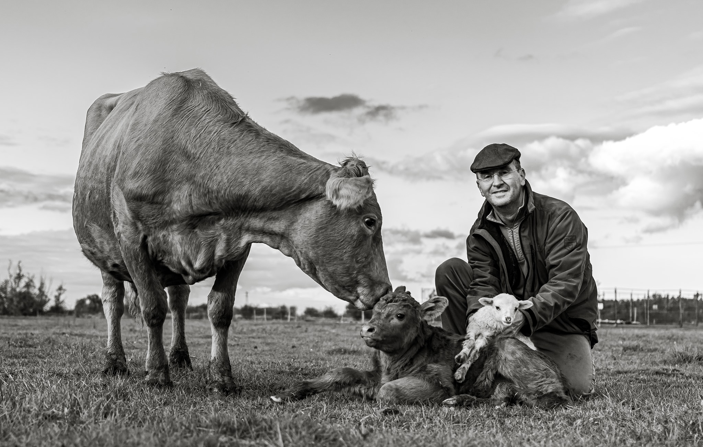

Kiss Sándor vagyok, és én csinálom ezt a komposztot a mezőtúri családi gazdaságunkban.
Agrármérnök vagyok. Húsz évig dolgoztam multinál: agronómusként kezdtem, üzemvezetőként, végül termelési igazgatóként folytattam. 2016-ban otthagytam a multit, és visszaköltöztem a földre.
Azóta ezt csinálom. És sokkal jobban szeretem, mint az irodát.
Egy kicsit rólam
- Agrármérnöki diplomám van. Tudom, mit jelent az NPK, és azt is, miért nem csak ez a fontos.
- 20 évig dolgoztam egy nagy multi agrárcégnél. Agronómusként kezdtem, aztán üzemvezető lettem, végül termelési igazgató. Vetőmagot, növényvédőt, technológiát adtunk el gazdáknak.
- 2016-ban elegem lett. Pontosabban: rájöttem, hogy amit ott csináltunk, az nem ugyanaz, mint amit otthon szerettem volna csinálni. Otthagytam a multit, megvettem az Agro-Túr Kft.-t, hozzá 12 angus tehenet, és elkezdtem a saját családi gazdaságomat.
- Tíz év alatt felépítettünk valamit, amire büszke vagyok. 22 angus és wagyu marha, 20+ dorper anyajuh, sok bárány, 50-150 csirke évszaktól függően, időnként kacsák, egy komondor és egy komondor-kuvasz keverék kutya.
- Körülbelül 80 hektáron gazdálkodunk. Bio kukoricát termesztünk étkezésre és takarmányra, mellette búzát, bükkönyt és egy csomó más kultúrát is.
- Minden földünk bio-tanúsított. Semmilyen vegyszert nem használunk, sehol.
- Regeneratív gazdálkodást csinálunk. Ez azt jelenti, hogy nem csak nem ártunk a talajnak, hanem évről évre javítjuk. Több szervesanyag, több élet, több víztároló képesség.
- Folyamatosan kísérletezem új fajtákkal és növényekkel. Magyarország szárazabb lesz, és muszáj alkalmazkodni. Aki most úgy csinál mindent, mint 20 éve, az 10 év múlva nem lesz versenyképes.
- Öt gyerekem van. A három nagyobb évek óta segít a gazdaságban. Egyikük csinálja most ezt az online értékesítést, amit éppen olvasol. A két kicsi, 3 és 6 évesek, még csak úgy tesznek, mintha segítenének, de már most jobban szeretik a teheneket, mint a tévét.
Miért árulunk komposztot?
Egyszerű ok: 22 marha + 20 juh + 100 csirke = sok szar.
Komolyabb ok: ha már egyszer kiderült, hogy a saját trágyánkból olyan komposzt készíthető, ami élőbb, tisztább és tápanyagdúsabb, mint bármi a boltban, akkor miért ne osztanánk meg?
A boltban kapható komposzt nagy része ipari feedlotokból jön. Antibiotikummal kezelt állatok trágyájából. GMO-takarmányról. A miénk bio-tanúsított legelőkről, fűvel etetett állatoktól, saját bio gabonával hizlalva.
Más a forrás. Más a végeredmény.
És tessék, ezt akarjuk eladni neked.
📍 5400 Mezőtúr, Felsőrészinyomás 105. | 📞 +36 39 4596 9764